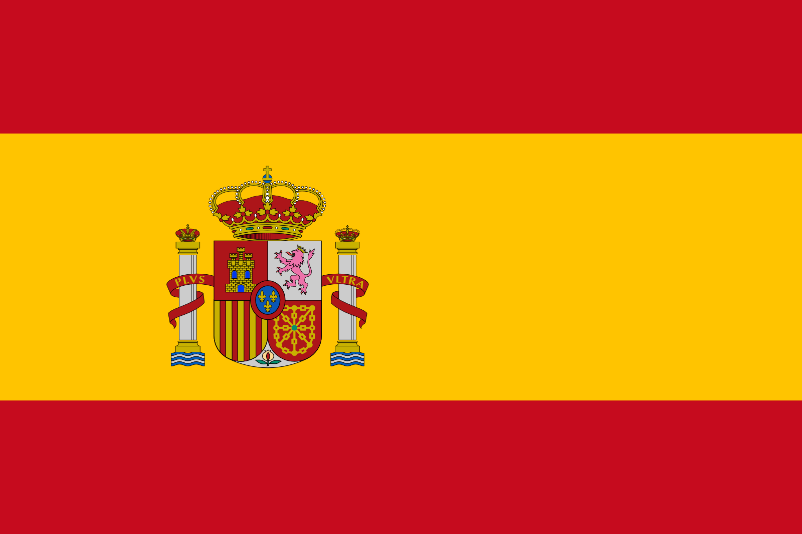
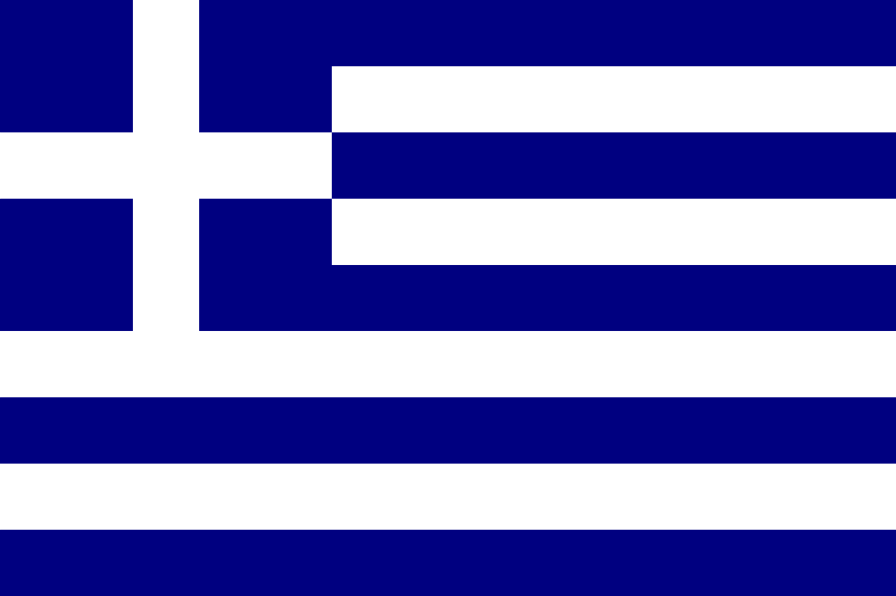
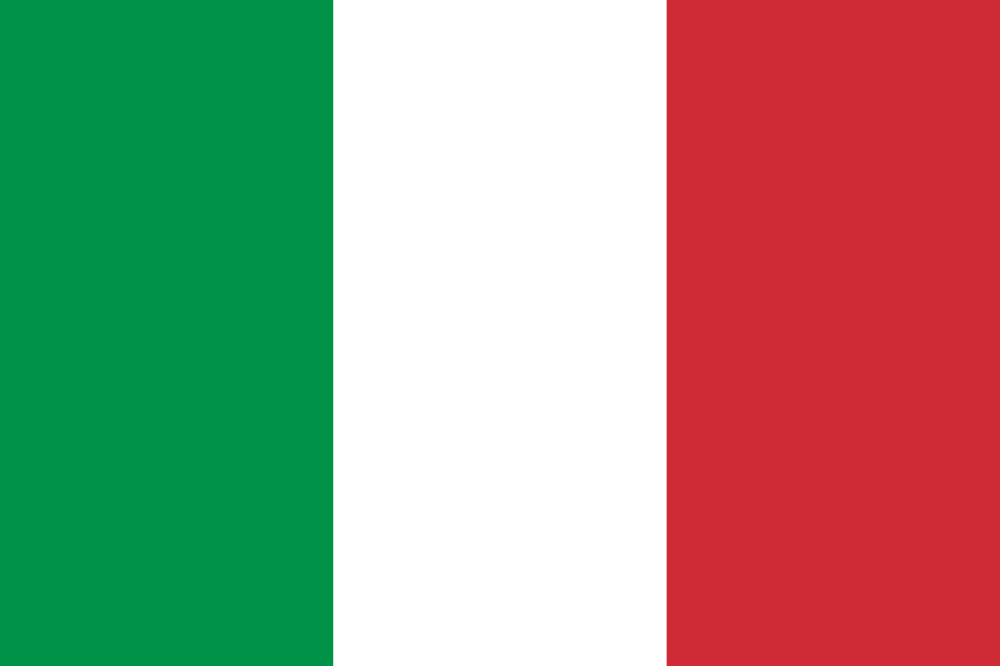
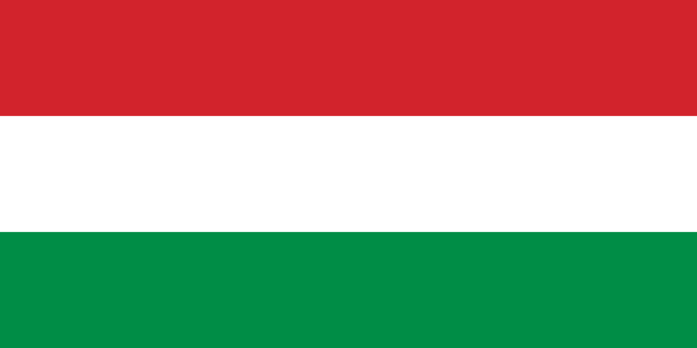
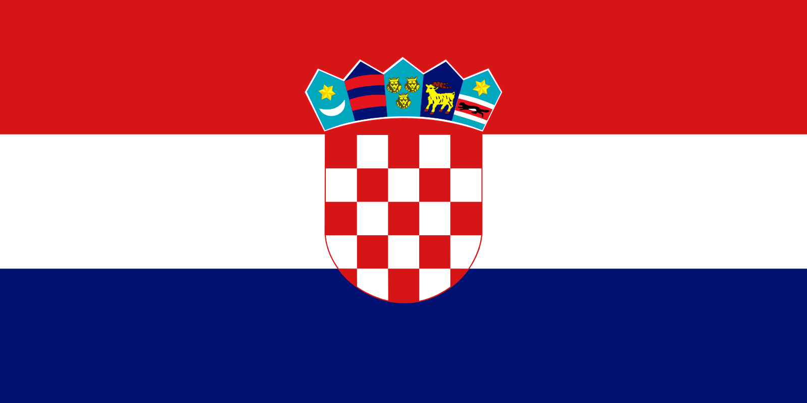
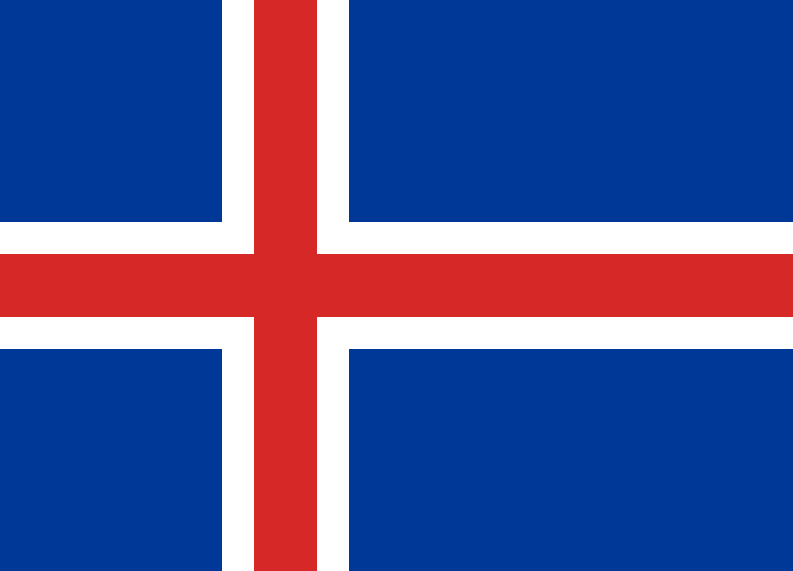
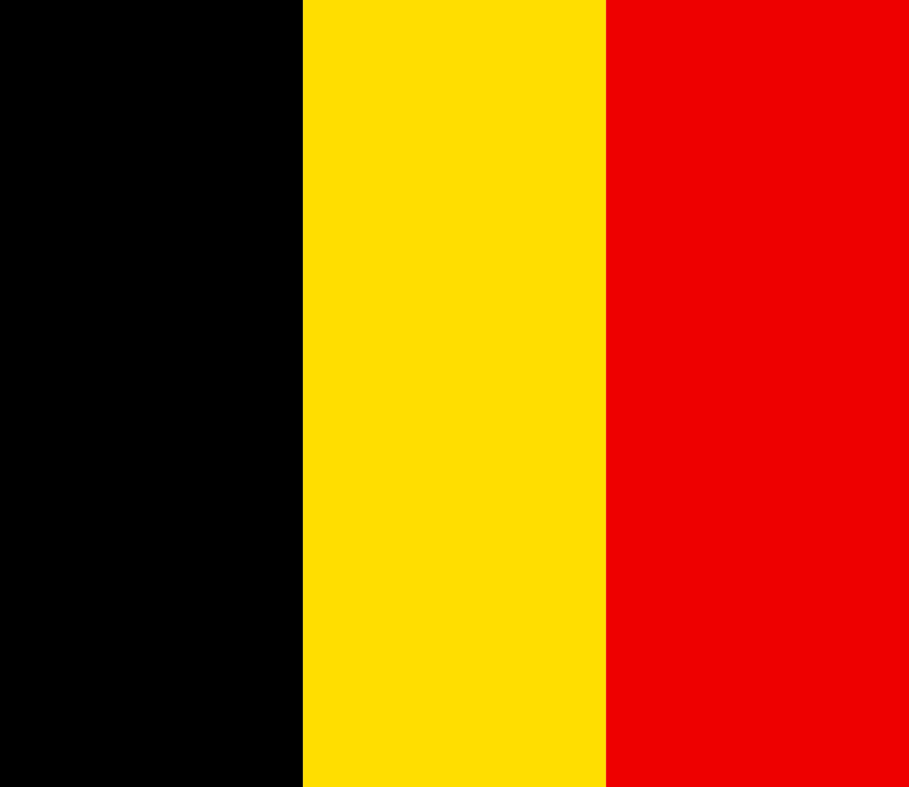
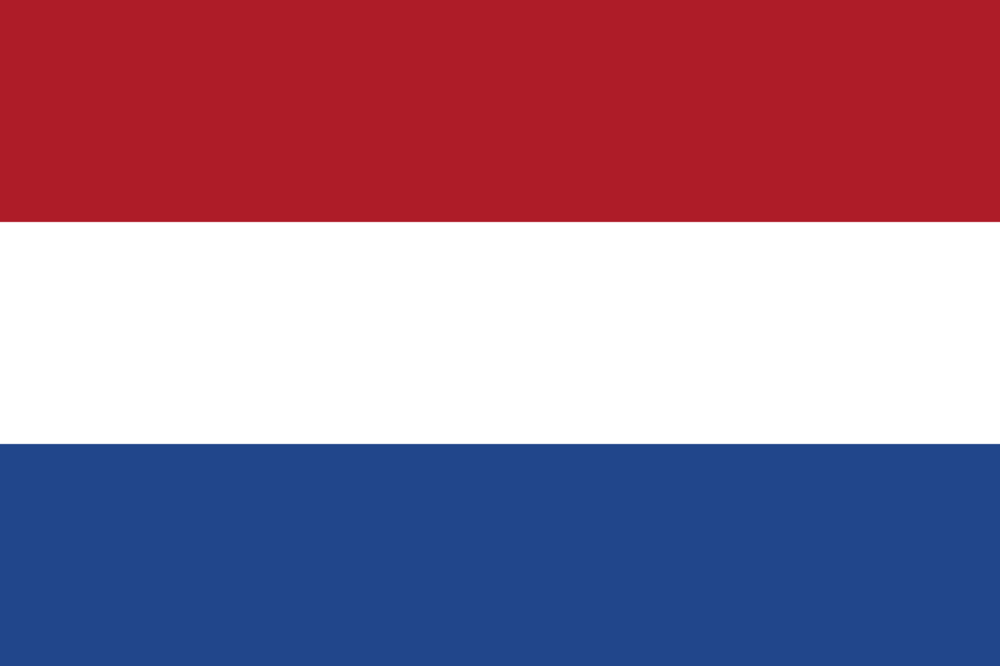
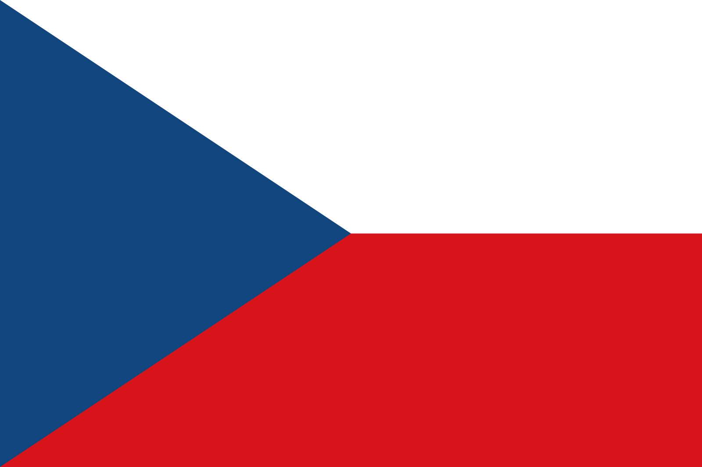
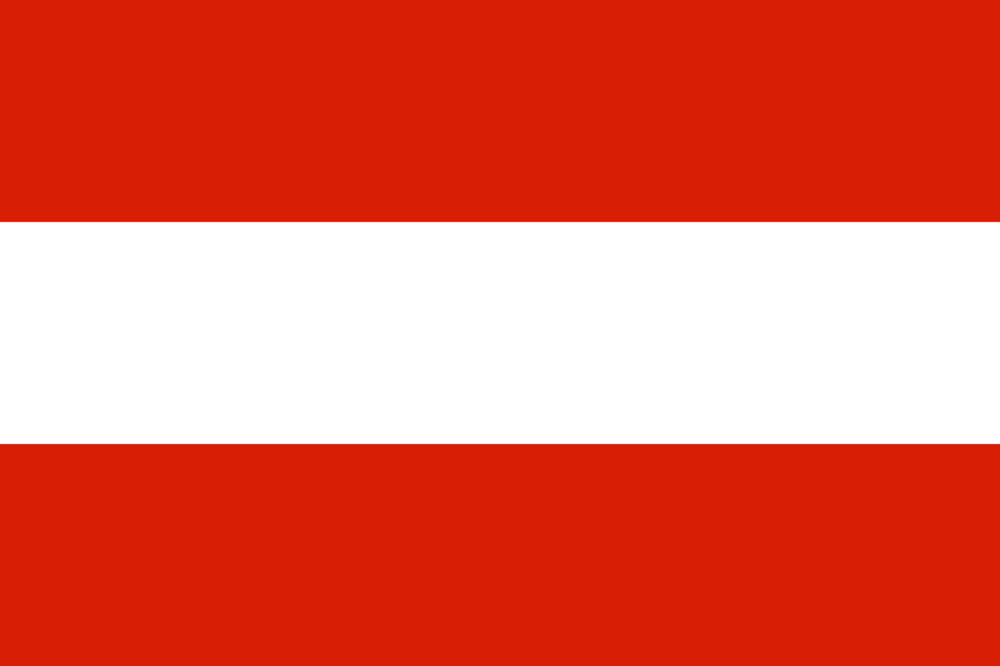

Germany
Number of cities interessed: 5

Germany, officially the Federal Republic of Germany, is a country in Central and Western Europe, lying
between the Baltic and North Seas to the north and the Alps, Lake Constance and the High Rhine to the south.
It borders Denmark to the north, Poland and the Czech Republic to the east, Austria and Switzerland to the
south, France to the southwest, and Luxembourg, Belgium and the Netherlands to the west.
France
Number of cities interessed: 3

France, officially the French Republic, is a country whose territory consists of metropolitan France
in Western Europe and several overseas regions and territories. The metropolitan area of France extends
from the Mediterranean Sea to the English Channel and the North Sea, and from the Rhine to the Atlantic
Ocean. It is bordered by Belgium, Luxembourg and Germany to the northeast, Switzerland and Italy to the
east, and Andorra and Spain to the south. France is a unitary semi-presidential republic with its capital
in Paris, the country's largest city and main cultural and commercial centre.
Spain
Number of cities interessed: 5

Spain, officially the Kingdom of Spain, is a country mostly located in Europe. Its continental European
territory is situated on the Iberian Peninsula. Its territory also includes two archipelagoes: the
Canary Islands off the coast of Africa, and the Balearic Islands in the Mediterranean Sea. The African
enclaves of Ceuta, Melilla, and Peñón de Vélez de la Gomera make Spain the only European country to have
a physical border with an African country (Morocco).Several small islands in the Alboran Sea are also
part of Spanish territory.
Greece
Number of cities interessed: 2

Greece, officially the Hellenic Republic (also known as Hellas), is a sovereign state located in Southern
and Southeast Europe. Its population is approximately 10.7 million as of 2018; Athens is the nation's
capital and largest city, followed by Thessaloniki. Situated on the southern tip of the Balkan Peninsula,
Greece is located at the crossroads of Europe, Asia, and Africa. It shares land borders with Albania to the
northwest, North Macedonia and Bulgaria to the north, and Turkey to the northeast. The Aegean Sea lies to
the east of the mainland, the Ionian Sea to the west, the Cretan Sea and the Mediterranean Sea to the south.
Italy
Number of cities interessed: 5

Italy, officially the Italian Republic, is a European country consisting of a peninsula delimited by the
Alps and surrounded by several islands. Located in the middle of the Mediterranean sea and traversed
along its length by the Apennines, Italy has a largely temperate seasonal and Mediterranean climate.
The country shares open land borders with France, Slovenia, Austria, Switzerland and the enclaved
microstates of Vatican City and San Marino. With around 60 million inhabitants, Italy is the fourth-most
populous member state of the European Union.
Hungary
Number of cities interessed: 1

Hungary is a country in Central Europe. Spanning 93,030 square kilometres in the Carpathian Basin, it
borders Slovakia to the north, Ukraine to the northeast, Austria to the northwest, Romania to the east,
Serbia to the south, Croatia to the southwest, and Slovenia to the west. With about 10 million
inhabitants, Hungary is a medium-sized member state of the European Union. The official language is
Hungarian, which is the most widely spoken Uralic language in the world, and among the few
non-Indo-European languages to be widely spoken in Europe. Hungary's capital and largest city is
Budapest; other major urban areas include Debrecen, Szeged, Miskolc, Pécs and Győr.
Croatia
Number of cities interessed: 1

Croatia, officially the Republic of Croatia, is a country at the crossroads of Central and Southeast
Europe, on the Adriatic Sea. It borders Slovenia to the northwest, Hungary to the northeast, Serbia to
the east, Bosnia and Herzegovina, and Montenegro to the southeast, sharing a maritime border with Italy.
Its capital, Zagreb, forms one of the country's primary subdivisions, along with twenty counties.
Croatia has an area of 56,594 square kilometres and a population of 4.28 million, most of whom are
Roman Catholics.
Iceland
Number of cities interessed: 1

Iceland is a Nordic island country in the North Atlantic, with a population of 360,390 and an area of
103,000 km², making it the most sparsely populated country in Europe. The capital and largest city is
Reykjavík, with Reykjavík and the surrounding areas in the southwest of the country being home to over
two-thirds of the population. Iceland is volcanically and geologically active. The interior consists of
a plateau characterised by sand and lava fields, mountains, and glaciers, and many glacial rivers flow
to the sea through the lowlands. Its high latitude and marine
influence keep summers chilly, with most of the archipelago having a tundra climate.
Belgium
Number of cities interessed: 1

Belgium, officially the Kingdom of Belgium, is a sovereign state in Western Europe. It is bordered by the
Netherlands to the north, Germany to the east, Luxembourg to the southeast, France to the southwest, and
the North Sea to the northwest. It covers an area of 30,688 km² and has a population of more than 11.4
million. The capital and largest city is Brussels; other major cities are Antwerp, Ghent, Charleroi and
Liège. Belgium is also a federal constitutional monarchy with a parliamentary system.
Netherlands
Number of cities interessed: 1

The Netherlands is a country located in Northwestern Europe with some overseas territories. In Europe,
it consists of twelve provinces that border Germany to the east, Belgium to the south, and the North Sea
to the northwest, with maritime borders in the North Sea with Belgium, Germany and the United Kingdom.
Together with three island territories in the Caribbean Sea—Bonaire, Sint Eustatius and Saba—it forms a
constituent country of the Kingdom of the Netherlands. The official language is Dutch, but a secondary
official language in the province of Friesland is West Frisian.
Czech Republic
Number of cities interessed: x

The Czech Republic, also known by its short-form name Czechia, is a country in Central Europe bordered by
Germany to the west, Austria to the south, Slovakia to the east, and Poland to the northeast.
The Czech Republic has a landlocked and hilly landscape that covers an area of 78,866 square kilometers
with a mostly temperate continental climate and oceanic climate. It is a unitary parliamentary republic,
with 10.6 million inhabitants. Its capital and largest city is Prague, with 1.3 million residents; other major
cities are Brno, Ostrava, Olomouc and Pilsen. The Czech Republic includes the historical territories of
Bohemia, Moravia, and Czech Silesia.
Austria
Number of cities interessed: x

Austria is a country in Central Europe comprising nine federated
states. Its capital, largest city and one of nine states is Vienna. It is bordered by the
Czech Republic and Germany to the north, Hungary and Slovakia to the east, Slovenia and Italy to the
south, and Switzerland and Liechtenstein to the west. The terrain is landlocked and highly mountainous,
lying within the Alps; only 32% of the country is below 500m, and its highest point is 3,798m.
The majority of the population speaks local Bavarian dialects as their native language, and German in its
standard form is the country's official language. Other regional languages are Hungarian, Burgenland
Croatian, and Slovene.